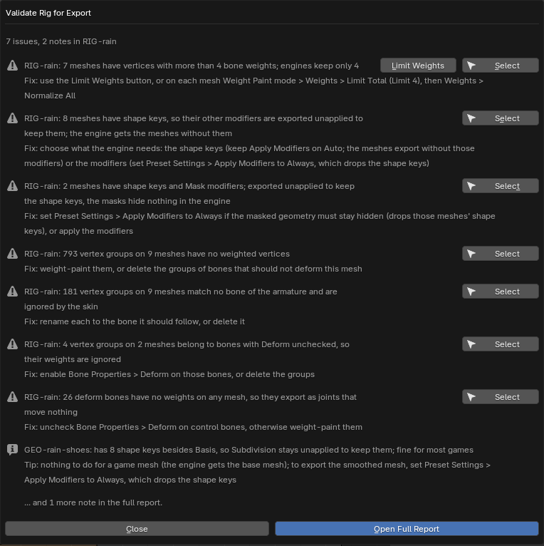

Guides / Blender animation export
Do you need to bake constraints before exporting Blender animations?
For Godot, Unity and Unreal. Measured on Blender 4.2, 4.5 and 5.0. Published 6 November 2026.
If your character is one armature with IK, Copy Rotation and drivers, the file has one action and nothing is on the NLA, Blender's glTF and FBX exporters already bake the constraints: you need neither a manual bake nor Rigbake.
The forum answer you will usually find is "constraints don't get exported", or "disable all bone constraints before you export". For the most common rig, that is not what Blender does today. Below is what we measured, the two setups where the default export really does go wrong, and a checklist that applies to every rig.
1. The short answer
- We built one armature with an IK leg, a Copy Rotation and a driver, all targets inside the rig. Blender's default glTF export matched the live rig exactly. Its default FBX export matched within 0.01 mm (1e-5 m).
- The glTF exporter even says so in its log: "Baking animation because of unsupported constraints acting on the bone". It samples the evaluated pose, constraints included, on every frame.
- So for that rig: no manual bake. Export with File > Export and import into your engine.
2. How we measured
Each rig is built in code. We export it with Blender's own exporters, every setting left at its default except "Selected Objects" (what File > Export gives you), then import the file back into an empty Blender scene. For every deform bone we compare the position and rotation of the imported animation with the live rig at five frames per clip (1, 6, 12, 18 and 24). A bone counts as matching within 1 mm and 0.001 rad. The runs used Blender 4.2, 4.5 and 5.0 as Python modules. FBX files are scored with the 4.2 or 5.0 importer, because Blender 4.5's FBX importer misreads files with several takes.
The numbers below are the worst bone over all frames: position error in metres / rotation error in radians.
3. Six single-rig setups, one action each
| Setup (one armature, one action in the file) | Default glTF | Default FBX |
|---|---|---|
| IK + Copy Rotation + a driver, all targets inside the rig | 0 / 0 | 0.00001 m / 0 |
| IK target is a separate, animated Empty | 0 / 0 | 0.00095 m / 0.0021 rad, plus a junk take "TargetMove" (the Empty's action) |
| A driver that reads a keyed custom property | 0 / 0 | 0 / 0 |
| Damped Track and Limit Rotation, deform bones not keyed | 0 / 0 | 0 / 0 |
| A deform bone under a constrained, non-deform MCH bone | 0 / 0 | 0 / 0 |
| The armature object has a Child Of to a moving Empty | 0 / 0 | 0 / 0, plus a junk take "Carry" |
glTF was exact in all six. FBX was exact or within 0.01 mm in five. The exception is an IK target that is a separate animated Empty: FBX was 0.00095 m and 0.0021 rad off, just over our 0.001 rad rotation tolerance (about 0.1°, which you are unlikely to see), and it added a take named after the Empty's action. Exporting deform bones only (glTF's "Deform Bones Only", FBX's "Only Deform Bones") gave the same results.
The junk takes are worth knowing about: Blender's FBX exporter, by default, writes every action in the file that fits the armature as its own take. In the engine you see extra animations you never made. Page 3 covers that in detail.
4. Where it does go wrong
Two setups break the default export, and baking constraints by hand fixes neither of them on its own. Each has its own guide:
- A separate control rig. The deform rig follows a second armature through constraints. Exported on its own, it comes out with 0 animations, in glTF and in FBX. Blender export has no animations: the control-rig case.
- Several clips on unmuted NLA tracks, exported to FBX. Each clip is written twice, and in our test two of the four takes were wrong by up to 0.60 m. Why Blender's FBX export gives duplicate takes.
5. If you bake by hand anyway
There are good reasons to bake: to clean up the keys, or for a tool that reads only plain keyframes. The manual route, as Blender users describe it on the glTF exporter's issue tracker (glTF-Blender-IO issue #439):
- Work on a copy of the file, or on a duplicate of the armature and its meshes. Clear Constraints removes the rig's constraints, so the original is no longer a working rig afterwards.
- Make one clip the active action.
- In Pose Mode, select the bones and choose Pose > Animation > Bake Action, with Visual Keying and Clear Constraints on.
- Repeat for each clip, one action at a time.
Bake each clip from a neutral pose. Channels that a clip doesn't key are not reset by the bake: they keep whatever value the rig had when you started, from the previous clip or from posing by hand, and that value is baked into every frame. Before each bake, put the rig back at rest (Pose > Clear Transform > All). This is the same leak that makes Blender's FBX export write a wrong Idle take on page 3, where it was 0.60 m.
6. A pre-export checklist for every rig
These problems are not about constraints, and they reach the engine whichever way you export:
- Unapplied or non-uniform scale on the armature or a mesh. Fix: Object > Apply > Scale.
- More than four bone weights per vertex. Engines keep only four. Fix: in Weight Paint mode, Weights > Limit Total (Limit 4), then Weights > Normalize All.
- Shape keys on a mesh with modifiers other than Armature. Blender's FBX exporter applies those modifiers by default, and Blender's own documentation warns that applying modifiers "prevents exporting shape keys". In our measurement the default glTF export kept them. Fix: disable the extra modifiers for the export, or apply them, if you need the shape keys in the engine.
- Motion keyed on the armature object instead of on a root bone. Blender's own FBX export keeps it; tools that bake bone motion only, Rigbake included, do not. Fix: move the motion to a root bone.
- Vertex groups that match no bone. The skin ignores them, so those vertices don't follow anything you expect. Fix: rename each group to the bone it should follow, or delete it.

7. Where Rigbake fits
Rigbake is our Blender add-on for the two setups in section 4. It bakes each clip from the rest pose into a new _baked action, leaving your own actions untouched, and exports one take per action, named after the action, through Blender's own glTF and FBX exporters with presets for Godot, Unity and Unreal. It also runs the checklist above as a Validate button. For a single rig like the one in section 1 it is a convenience, not a fix. The FBX results on this page were measured by re-importing in Blender and in Godot 4.7, not inside Unity or Unreal. Rigbake for Blender.